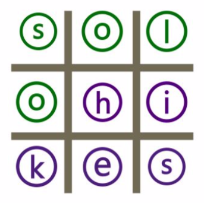
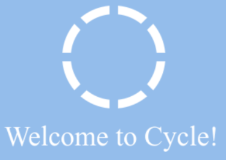

“What you do today is important because you are exchanging a day of your life for it.” -Unknown
Projects
Take a look at some of the projects I've completed in the past four years. They range from data science to UX to machine learning. *If you click on the title, you'll be directed to a PDF file of the project.*
UX
#Adulting in College
Fall 2016
This project explored how and when the average college student became the average adult. The methodology involved interviews and surveys.
Diversity in the Outdoors
Fall 2017
This project explored the ways in which we can make our outdoors more accessible, specifically to the deaf and hard of hearing community.
Cycles
Spring 2018
 This project explored how young adults were using ephemeral apps, such as Snaphchat. My group aimed to adjust the way young adults could trust the app.The methodology involved interviews, survey, and user testing.
Data Science
Online Cancer Disclosure
Spring 2018
This project explored how young adults were using ephemeral apps, such as Snaphchat. My group aimed to adjust the way young adults could trust the app.The methodology involved interviews, survey, and user testing.